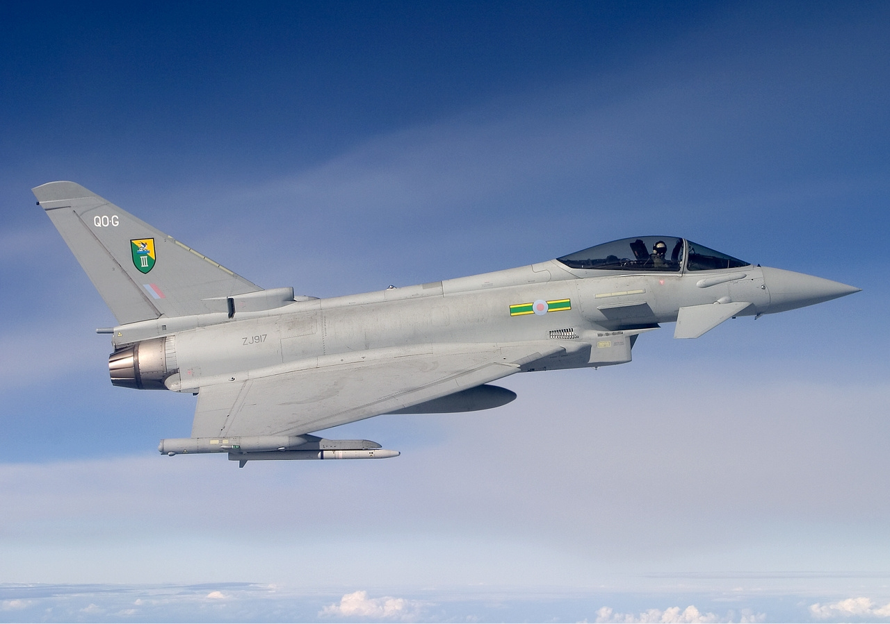
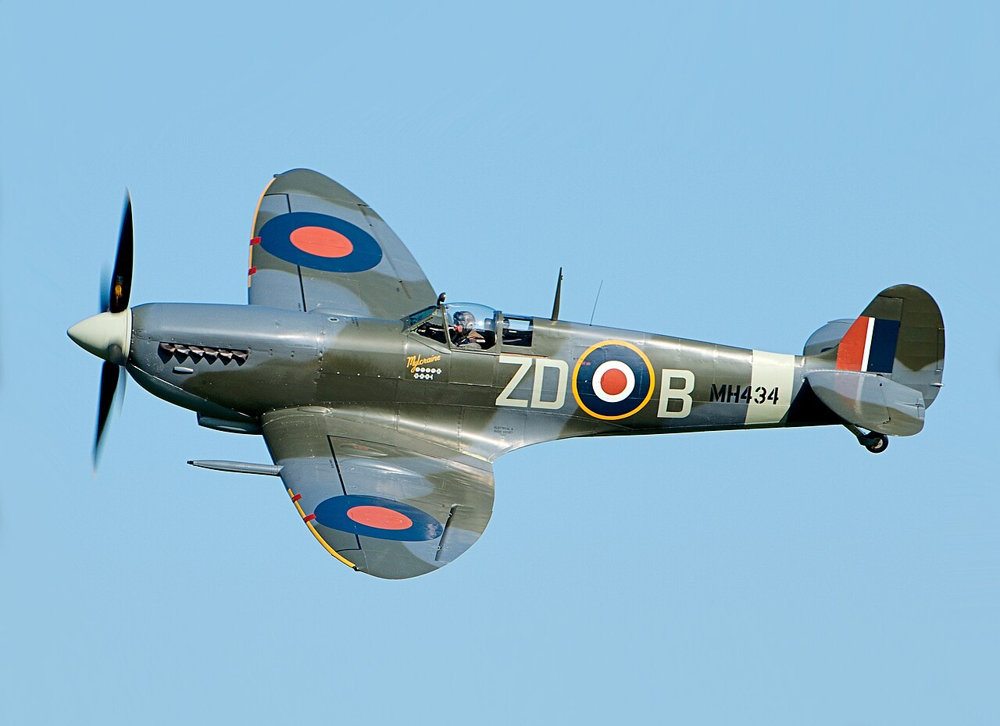
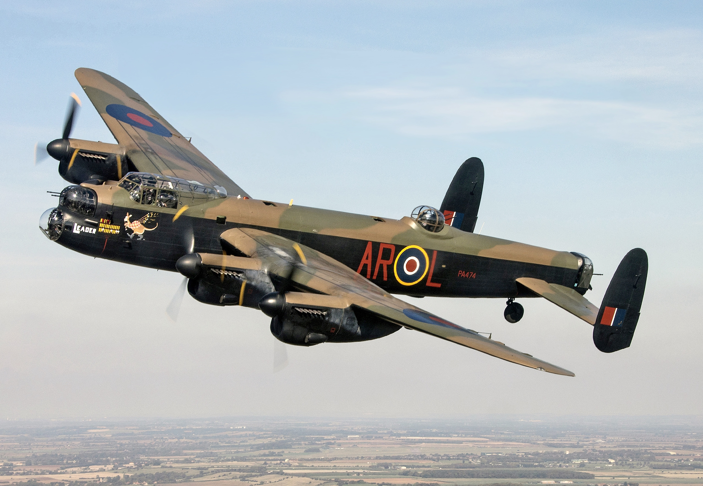

Eurofighter Typhoon
The Eurofighter Typhoon is a highly agile, twin‑engine, canard‑delta wing multirole fighter
developed by a European consortium including the UK, Germany, Italy, and Spain. Designed
originally for air superiority, it has evolved into a powerful swing‑role aircraft capable of
switching between air‑to‑air and air‑to‑surface missions in a single sortie. With a top speed
of Mach 2, advanced avionics, and compatibility with modern weapons such as Storm Shadow and
Brimstone, the Typhoon remains one of Europe’s most advanced combat aircraft. It entered
service in 2003 and continues to be operated by the Royal Air Force and several allied nations.
Eurofighter Typhoon – Image

Royal Air Force Eurofighter Typhoon in flight.
This Eurofighter Typhoon, identifiable by its canard‑delta wing layout and RAF markings,
highlights the aircraft’s agility and modern combat capability. The Typhoon is a
twin‑engine multirole fighter capable of air superiority, precision strike, and
reconnaissance missions. Its advanced avionics, high thrust‑to‑weight ratio, and
Mach‑2 performance make it one of Europe’s most capable frontline jets.
English Electric Lightning – Image
WW2 Planes
During the Second World War, Britain produced some of the most iconic and effective aircraft
ever built. These planes played a crucial role in defending the nation and securing victory
in the air. Among them, the Supermarine Spitfire stands out as a symbol of courage,
engineering brilliance, and national resilience.
Supermarine Spitfire – Image

Supermarine Spitfire – legendary British WW2 fighter.
The Supermarine Spitfire is one of the most famous fighter aircraft in history. Designed by
R.J. Mitchell, it became a key symbol of the Royal Air Force during the Battle of Britain.
Its elliptical wings, powerful Rolls‑Royce Merlin engine, and exceptional agility made it a
formidable opponent in dogfights. The Spitfire served in numerous roles throughout the war,
including interceptor, reconnaissance aircraft, and ground‑attack fighter. Its legacy lives
on today in airshows and museums around the world.
Avro Lancaster – Image

Avro Lancaster – Britain’s iconic WW2 heavy bomber.
The Avro Lancaster was the Royal Air Force’s most important heavy bomber of the Second World
War. Known for its reliability, long range, and ability to carry exceptionally large payloads,
the Lancaster played a crucial role in night bombing operations over Europe. Its most famous
mission was Operation Chastise, carried out by the “Dambusters” using Barnes Wallis’s
innovative bouncing bomb. With four Rolls‑Royce Merlin engines and a distinctive silhouette,
the Lancaster became a symbol of British engineering and wartime determination.